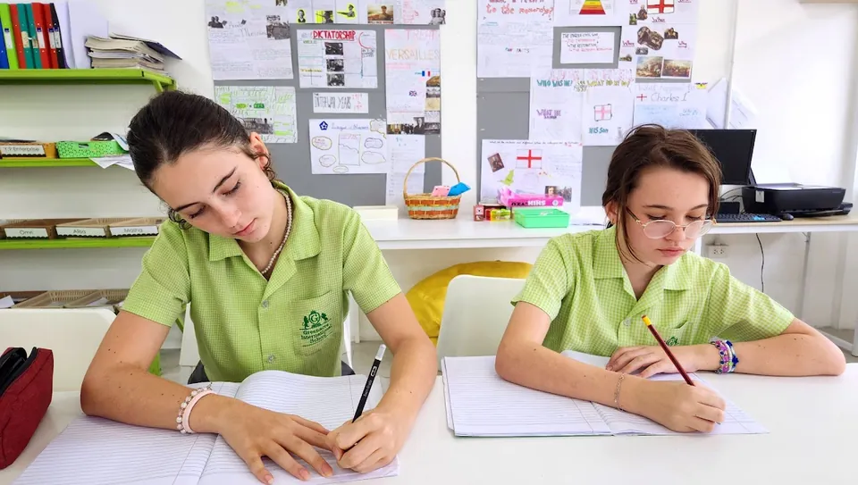

About Greenacre
An international school with a global outlook, based on Koh Samui and shaped by a warm, inclusive community.
Growing Together · Learning Together · Working Together
Greenacre is an international school providing a progressive learning pathway from age 3 to 16. The curriculum combines internationally recognised programmes with elements of the UK curriculum, progressing to Cambridge IGCSE in Years 10 and 11.
Our setting in Thailand is an important part of our identity. We celebrate the diverse backgrounds and experiences within our community and strongly value the traditions and culture of Thailand, helping students become open-minded, respectful and confident global citizens.
Our GREEN values are woven throughout school life. Sustainability, environmental awareness and care for our community are not simply classroom topics, but part of how we learn and live together.

Values lived throughout school life
Every person matters
Greenacre aims to provide a stimulating and enriching education within a supportive, inclusive community, where each person matters and in which all students have the opportunity to thrive and fulfil their potential as a global citizen.
Preparing students for life beyond school
We want every Greenacre student to be equipped for life beyond school, confident, responsible and ready to contribute.
Develop confidence and high self-respect, supporting students in achieving their ambitions.
Become environmentally aware global citizens who make a positive contribution to their communities.
Experience a culture of excellence that stretches and challenges all.
Learn in a safe environment, with parents and carers working in partnership to support learning and personal development.
A broad, connected curriculum
Students progress from Early Years through Primary and Secondary to Cambridge IGCSE, developing strong subject knowledge alongside confidence, creativity, critical thinking and international mindedness.
Education for the whole child
Our approach combines academic progress with inclusion, cultural understanding, environmental responsibility and personal development. We aim to help every student become the best version of themselves.
A safe and supportive school
Greenacre is committed to safeguarding and promoting the wellbeing of every student. The school maintains comprehensive safeguarding policies and procedures, supported by regular staff training, so that safeguarding responsibilities are understood across the school community. Our aim is to provide a safe and inclusive environment where students feel valued, heard and supported.
A licensed international school in southern Koh Samui
Greenacre International School is a privately owned international school licensed to operate in Thailand. The school is based at its registered address at 108 Moo 2, Na Mueang, Koh Samui, Surat Thani 84140.